All units of length in the metric system are defined in terms of the metre. A prefix is added to indicate the decimal place value position of the measurements. Similarly the units of weight and volume are defined in terms of gram and litre respectively. Let us observe the conversion chart.
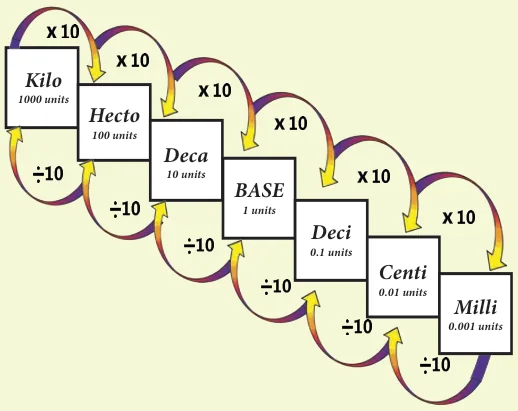
- When we move from higher unit to lower unit, multiply the given measure by the powers of 10's.
- When we move from lower unit to higher unit, divide the given measure by the powers of 10's.
Remember the following Conversion table:
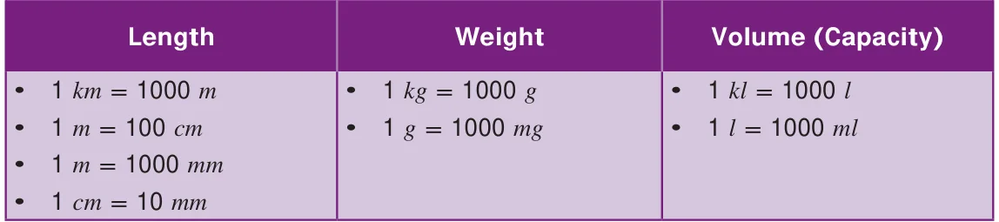
Before we study Conversion of metric units, we should learn about decimal point position when multiplying / dividing of a decimal number by the powers of ten.
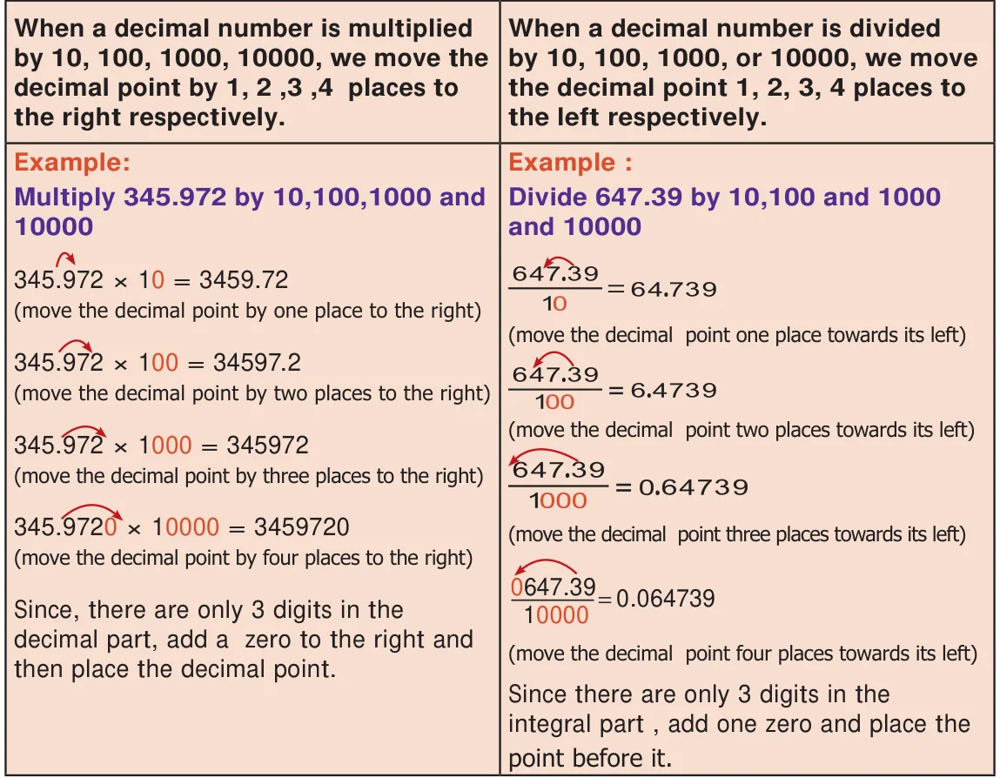
Example 1: The official distance of Marathon race is 42.195 \(\text{km}\). Express this distance in metre.
Solution : The official distance of Marathon race is 42.195 \(\text{km}\).
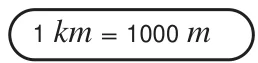
\(= 42.195 \times 1000\ \text{m}\)
\(= 42195\ \text{m}\)
Example 2: The average rainfall of Tamilnadu is 998 \(\text{mm}\). convert it into \(\text{cm}\).
Solution : The average rainfall \(= 998\ \text{mm} = 998.0 \times \frac{1}{10}\ \text{cm}\)
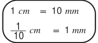
\(= \frac{998.0}{10}\ \text{cm}\)
\(= 99.8\ \text{cm}\)
Example 3: A flag pole is 5 \(\text{m}\) 35 \(\text{cm}\) long. What is the length of the flag pole in \(\text{cm}\)?
Solution : The length of a flag pole \(= 5\text{ m }35\text{ cm}\) long
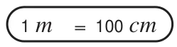
\(= (5 \times 100)\ \text{cm} + 35\ \text{cm}\)
\(= 500\ \text{cm} + 35\ \text{cm}\)
\(= 535\ \text{cm}\)
The flag pole is 535 \(\text{cm}\) long.
Example 4: Janaki bought 650 \(\text{mg}\) of a tablet. What is its weight in gram?
Solution : weight of a tablet \(= 650\ \text{mg}\)
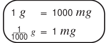
\(= 650.0 \times \frac{1}{1000}\ \text{g}\)
\(= \frac{650.0}{1000}\ \text{g} = 0.65\ \text{g}\)
Example 5: Murali has a bag that weighs 3 \(\text{kg}\) and 450 \(\text{g}\). What is its weight in gram?
Solution : weight of Murali's bag \(= 3\ \text{kg}\) and 450 \(\text{g}\),
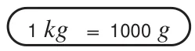
\(= (3 \times 1000\ \text{g}) + 450\ \text{g}\)
\(= 3000\ \text{g} + 450\ \text{g}\)
\(= 3450\ \text{g}\)
Example 6: A calf drinks 5.750 \(l\) of water, convert into \(\text{ml}\)
Solution : Quantity of water drunk by the calf \(= 5.750\ l\)
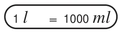
\(= 5.750 \times 1000\ \text{ml}\)
\(= 5750\ \text{ml}\)
Example 7: Convert 526 \(\text{ml}\) into \(l\)
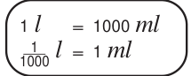
Solution :
\(526\ \text{ml} = 526.0 \times \frac{1}{1000}\ l\)
\(= \frac{526.0}{1000}\ l = 0.526\ l\)
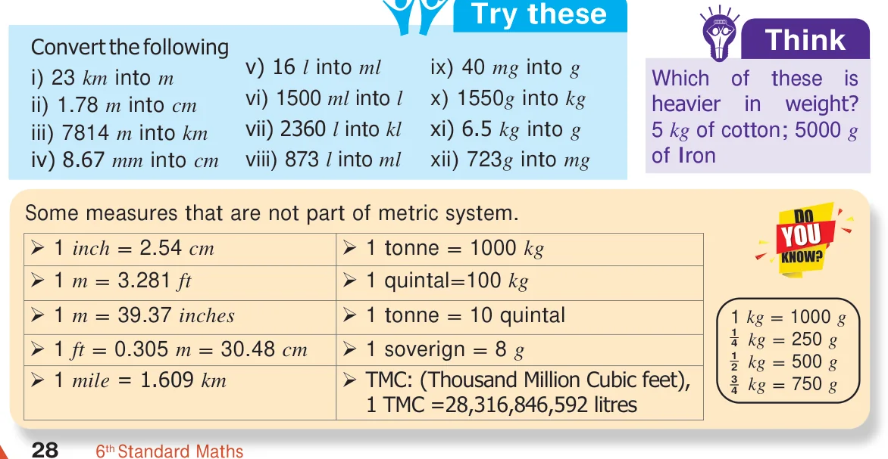
The following Tamil puzzle is taken from the famous Mathematics problems collection book in Tamil called “Kanakkathikaram” in which is a good example of conversion of units of distance :
முப்பத்தி ரண்டு முழம்உளமுட் பனையை
தப்பாமல் ஒந்தி தவழ்ந்தேறிச் – செப்பமுடச்
சாணேறி நான்குவிரற்கிழியும் என்பரே
நாணா தொரு நாள் நகர்ந்து
Meaning of this puzzle: On a palm tree of height 32 cubit, a chameleon tried to reach the top of the tree. If it climbed one hand span on it but slipped four fingers on one day, in how many days will it reach the top of the tree?
Solution:
1 hand span \(= 12\) fingers;
1 cubit \(= 2\) hand spans \(= 24\) fingers.
Height of the palm tree \(= 32\) cubit \(= 32 \times 24\) fingers \(= 768\) fingers.
Distance climbed in 1 day \(= 1\) hand span \(= 12\) fingers.
Distance slipped in 1 day \(= 4\) fingers.
Actual distance climbed in 1 day \(= 12 - 4 = 8\) fingers.
Number of days required to climb the top of the tree \(= 768 / 8 = 96\) days